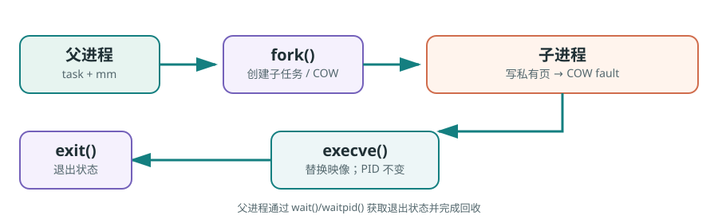

大家好，我是你们的讲师。想象一下，你打开了一台新电脑——浏览器开了30个标签页、VS Code在编译工程、网易云音乐在后台播放、微信在接收消息、还有一个Docker容器在跑数据库。电脑到底是怎么"同时"做完这么多事情的？每个程序在底层是怎么被"管"起来的？这就是进程管理的核心问题。
进程（Process）是操作系统中最核心的抽象之一。它不仅是资源分配的基本单位，也是系统隔离和保护的基础。可以毫不夸张地说，理解了进程管理，你就理解了操作系统的半边天。这一章，我们从进程的物理本质出发，深入到Linux内核的task_struct、五种状态模型、fork的写时拷贝机制，一直到execve如何加载一个新程序。这一整套链路，构成了进程从"生"到"死"的完整故事。
先提出一个可验证的问题：父进程 fork() 后，子进程修改一个私有变量，为什么父进程通常仍看到原值？理解这个现象，需要同时观察进程标识、地址空间映射、页表权限和 wait() 回收路径。

进程到底是什么
一个最经典的定义——进程是"运行中的程序"。程序是一堆躺在磁盘上的二进制指令和数据，是静态的；进程是这些指令被加载到内存、CPU开始逐条执行后的那个动态实体。同一个程序（比如你的浏览器）可以同时启动多个进程，每个进程有自己的内存空间、文件描述符、堆栈和执行上下文。
进程在内存中的布局
一个进程被加载到内存后，它的地址空间从低地址到高地址大致分为五个区域：
高地址 ──────────────
│ 栈（Stack） │ ← 局部变量、函数调用帧，向下增长
│ ↓ 向下增长 │
├──────────────────┤
│ 堆（Heap） │ ← malloc动态分配，向上增长
│ ↑ 向上增长 │
├──────────────────┤
│ BSS段 │ ← 未初始化的全局变量/静态变量
├──────────────────┤
│ 数据段（Data） │ ← 已初始化的全局变量/静态变量
├──────────────────┤
│ 代码段（Text） │ ← 只读的机器指令
低地址 ──────────────其中代码段是只读的，由程序的二进制指令构成。数据段和BSS段存放全局变量。堆是动态内存分配的区域，栈则管理函数调用——每次函数调用都会在栈上压入一个栈帧（Stack Frame），包含返回地址、局部变量、寄存器上下文。栈和堆相向生长，中间是空闲区域，如果它们撞上了，就会发生经典的栈溢出或堆溢出。
面试考点：进程地址空间的五个段（Text/Data/BSS/Heap/Stack）是OS面试几乎必问的基础题。常见延伸问题包括：BSS段为什么和Data段分开？答案是为了节省可执行文件的空间——BSS段不占用磁盘空间，只记录大小，加载时由内核初始化为零。
task_struct：Linux进程的"身份证"
在 Linux 内核中，每个可调度任务（包括进程组中的各个线程）都由一个 task_struct 描述。它包含任务状态、调度信息、凭据、资源指针和父子关系等字段。结构体布局会随内核版本、架构与配置变化，不应把它的大小或内部字段当作稳定 ABI。
一个进程从被创建到消亡，内核把它的所有信息都塞进了这个结构体。我们来看看最重要的几类字段：
| 字段类别 | 核心字段示例 | 作用 |
|---|---|---|
| 标识 | pid（进程ID）、tgid（线程组ID） | 唯一标识一个进程 |
| 状态 | state（TASK_RUNNING等） | 记录进程当前处于何种状态 |
| 内存 | mm（mm_struct指针） | 指向进程地址空间描述符 |
| 文件 | files（files_struct指针） | 已打开的文件描述符表 |
| 信号 | signal（signal_struct）、pending | 信号处理与等待信号 |
| 调度 | se/sched_entity、prio、policy | 调度实体、优先级、调度策略 |
| 父子关系 | parent、children、sibling | 通过链表连接进程树 |
| 时间统计 | utime、stime、start_time | 用户态/内核态CPU时间 |
Linux 的每个线程都是一个独立的 task_struct；同一线程组中的任务共享部分资源指针，例如地址空间和文件描述符表。内核提供不同的遍历接口：例如进程组 leader 的遍历与所有 task 的遍历并不相同。用户态可用 ps -eLf 查看线程级条目；不要把 ps aux 的默认输出等同于内核所有 task 的完整清单。
current宏：找到"我"自己
内核代码中经常看到 current 这个宏，它返回当前正在执行的进程的 task_struct 指针。这是个极其高频使用的宏——内核需要频繁读取当前进程的uid、pid、内存描述符等信息。
// 内核代码可通过 current 宏取得当前 task_struct。
// current 的底层实现由架构相关代码提供，并非稳定的用户态接口。
struct task_struct *task = current;
pr_info("current pid=%d\\n", task->pid);核心洞见：task_struct之所以如此庞大，是因为Linux奉行"一切皆进程"的设计哲学。甚至是内核自己的工作——比如内存回收、刷脏页、处理中断下半部——也包装成"内核线程"，用task_struct来表示。在Linux里，几乎任何执行上下文都能归结为一个task_struct。
进程五状态模型与Linux实现
教科书上经典的进程五状态模型是：创建（New）、就绪（Ready）、运行（Running）、阻塞（Blocked/Waiting）、终止（Terminated）。我们来看看Linux内核是如何映射这些抽象状态的。
Linux内核中的进程状态
Linux在 task_struct 的 state 字段中定义了下面几种状态，它们定义在 include/linux/sched.h：
| Linux状态常量 | 对应教科书状态 | 含义 |
|---|---|---|
| TASK_RUNNING | 就绪 / 运行 | 进程要么正在CPU上运行，要么在就绪队列中等待调度 |
| TASK_INTERRUPTIBLE | 阻塞 | 等待某个条件（I/O、信号等），收到信号即可唤醒 |
| TASK_UNINTERRUPTIBLE | 阻塞（不可打断） | 等待内核态条件（如磁盘I/O），信号也无法唤醒 |
| TASK_STOPPED | 暂停 | 收到 SIGSTOP/SIGTSTP 等信号后暂停执行 |
| TASK_TRACED | 被跟踪 | 被ptrace跟踪（如gdb调试时） |
| exit_state = EXIT_ZOMBIE | 僵尸 | 任务已退出，保留退出状态供父进程 wait 系列调用回收 |
| exit_state = EXIT_DEAD | 待最终释放 | 退出清理过程中的内部状态，不等同于普通运行状态 |
TASK_UNINTERRUPTIBLE 表示任务处于不可由普通信号打断的睡眠状态，常见于某些 I/O 等待路径，但并非所有 D 状态都意味着磁盘故障。SIGKILL 可以设置致命信号，但任务通常要等到当前不可中断等待结束后才能完成退出；排查时应同时检查等待原因、设备、文件系统和内核栈。
诊断提示：可结合 ps -eo pid,stat,wchan:32,comm、cat /proc/PID/stack（权限允许时）和内核日志观察 D 状态任务。状态字母只能提示睡眠类别，不能单独确定根因。
僵尸进程
还有一个有趣的状态——僵尸（Zombie）。当进程执行完毕调用exit()退出后，它的大部分资源都被释放了，但task_struct和退出信息（退出码、资源使用统计）还保留着。此时进程处于僵尸状态，等待父进程调用wait()来"收尸"。如果父进程既不调用wait()也不忽略SIGCHLD信号，僵尸进程就会一直存在——这就是我们开头说的那个踩坑故事的根源。
少量的僵尸进程没问题，但如果大量堆积，就会耗尽内核能分配的pid上限（/proc/sys/kernel/pid_max），导致无法创建新进程。
fork()写时拷贝的魔法
创建新进程的传统方式是fork()系统调用。但这个系统调用的实现却非常巧妙——它用了一个叫"写时拷贝"（Copy-on-Write，COW）的延迟复制技术。
朴素的fork实现有什么问题？
最直观的想法：fork的时候把父进程的整个地址空间完整复制一份给子进程。这面看着简单，但问题是——绝大多数fork之后紧接着就是execve（加载一个新程序），意味着刚复制完的地址空间马上就被丢弃了。如果每次fork都完整复制一次内存，相当于做了大量的无用功。这就是"COW"要解决的核心问题。
COW的工作原理
COW 的核心是延迟复制：对于私有、原本可写的映射，fork() 后父子暂时引用相同物理页，内核通过页表权限与写保护缺页来检测写入。发生写保护缺页时，内核判断是否仍可共享；若需要隔离写入，就分配新页、复制内容并更新映射。只读页、共享映射和特殊映射的处理并不等同于“所有页一律标记只读”。
// fork()系统调用的核心路径（简化）
SYSCALL_DEFINE0(fork)
{
// 1. 调用 _do_fork()
return _do_fork(SIGCHLD, 0, NULL, NULL);
}
static long _do_fork(unsigned long clone_flags, ...)
{
// 2. 复制 task_struct
struct task_struct *p = copy_process(clone_flags, ...);
if (!IS_ERR(p)) {
// 3. 唤醒子进程使其可被调度
wake_up_new_task(p);
}
return p->pid;
}
// copy_process 中的核心步骤
static __latent_entropy struct task_struct *copy_process(...)
{
// dup_task_struct() — 复制 task_struct 和内核栈
// copy_mm() — 不复制物理页，只复制页表（所有页标记为只读）
// copy_fs() — 复制文件系统信息
// copy_files() — 复制文件描述符表
// copy_signal() — 复制信号处理相关结构
}fork() 通常不会立即复制整个用户态数据集，但仍需要创建任务元数据、处理页表与映射、增加相关引用并执行必要的 TLB 同步。内核栈是否通过 vmalloc 映射取决于架构和 CONFIG_VMAP_STACK 等配置，不能概括为所有 Linux 5.x 内核的固定行为。
工程权衡：COW 把大量数据页的复制推迟到真正写入时，但 fork 仍有页表和元数据成本。若父子进程在 fork 后都大量写入，复制与内存压力仍可能很大。Redis 等程序使用 fork 创建快照子进程时，也必须考虑写入期间的 COW 内存放大；不能把 fork 的复杂度简化成对所有负载都成立的单一大 O 结论。
execve()：一个程序的诞生
fork创建了一个"几乎和父进程一模一样"的子进程（共享地址空间但用COW）。但绝大多数情况下，你fork之后想干的是——让子进程运行一个完全不同的程序。这就是execve()系统调用的职责。
execve()干了什么
execve() 接收三个参数：要执行的程序的路径、命令行参数数组( argv )、环境变量数组( envp )。它的工作就是：把当前进程的地址空间完全替换成新程序的地址空间。
#include <unistd.h>
int execve(const char *pathname, char *const argv[],
char *const envp[]);
// 成功不返回，失败返回 -1注意第一句话——execve成功就"不返回"了。这是因为它把当前进程的代码段、数据段、堆、栈全部替换掉了，不存在"再回到调用点执行"的可能。如果execve返回了，说明它失败了（比如文件不存在或没有执行权限）。
ELF加载过程
Linux上最常见的可执行文件格式是ELF（Executable and Linkable Format）。execve()加载ELF文件的完整流程大致如下：
execve() 系统调用的执行路径：
1. 用户态调用 execve() → 触发 sys_execve() 陷入内核
2. 内核调用 do_execveat_common()
3. → exec_binprm() 开始加载
4. → load_elf_binary() ← ELF格式的加载器
5. a. 检查ELF魔数（\x7fELF）
6. b. 解析ELF头，获取入口地址、程序头表
7. c. 遍历程序头，将PT_LOAD类型的段映射到内存
8. d. 设置新进程的栈（argv, envp, auxv）
9. e. 设置mm->start_code/end_code等地址范围
10. f. 在新映像准备完成后切换到新的地址空间，并清理旧映像（实现细节随版本变化）
11. g. 设置新程序的入口点（ELF入口地址）
12. 返回用户态 → CPU跳转到新程序的入口地址开始执行execve() 不会创建一个新 PID；它让调用进程替换当前程序映像。内核先准备新程序的映像与启动栈，在成功切换后清理旧地址空间。ELF 的 PT_LOAD 段通常建立为文件映射，页面可按需调入；若存在 PT_INTERP，还会启动动态链接器完成后续装载与重定位。
本质思考：fork() + execve() 的两步设计是UNIX系统设计的经典案例。fork提供"快速创建进程上下文"的能力，execve提供"替换进程内容"的能力。两者分离，各司其职，组合起来就形成了一个强大的进程创建原语。相比之下，Windows的CreateProcess()是一个一步到位的API，同时完成"创建"和"加载"——各有利弊。
讲到这里，进程从创建（fork）、内容替换（execve）、状态转换（五状态模型）到终止（exit + wait）的完整生命周期就讲完了。你可以看到，每个环节都有精妙的设计——COW避免不必要的内存复制、ELF加载器的层次化设计、进程状态的细粒度控制——这些都不是拍脑袋想出来的，而是几十年的工程实践积累的智慧。
下一章，我们沿着"执行粒度更小"的方向继续深挖——从进程到线程，再到协程。你会发现，当同步机制越来越重、切换开销越来越成为瓶颈时，操作系统提供了更轻量的并发原语来应对。我们下一章见。